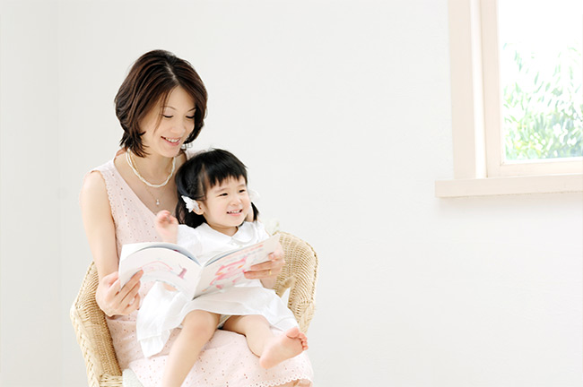
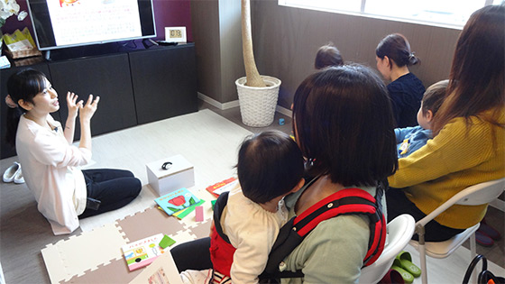
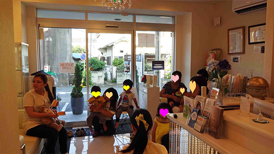
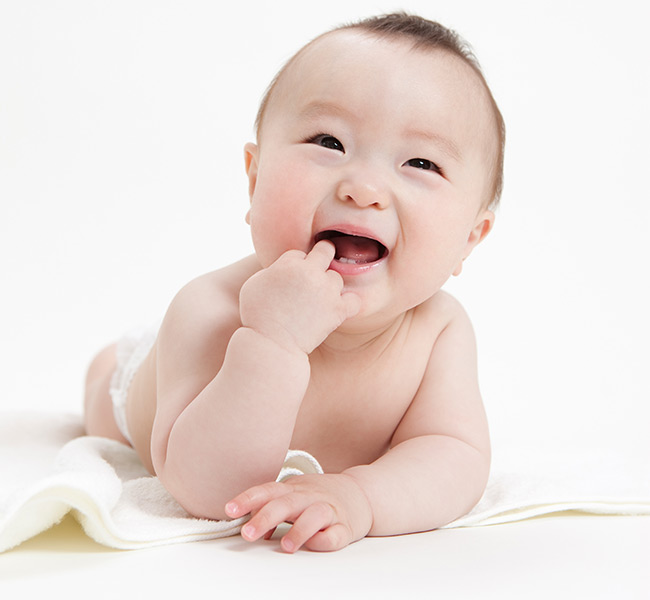
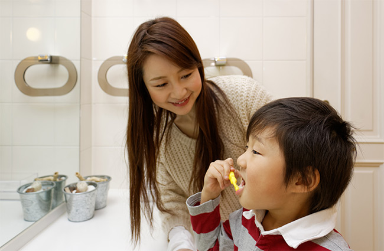
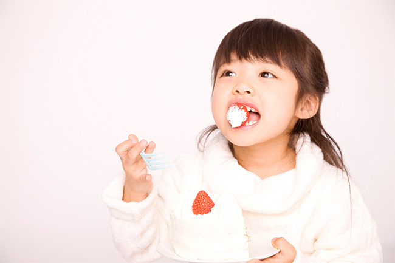
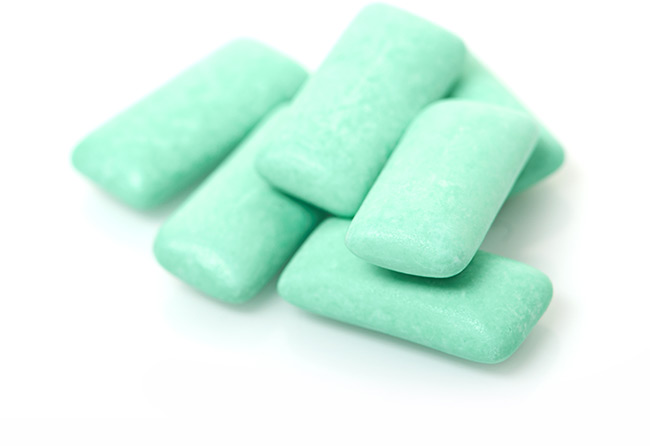
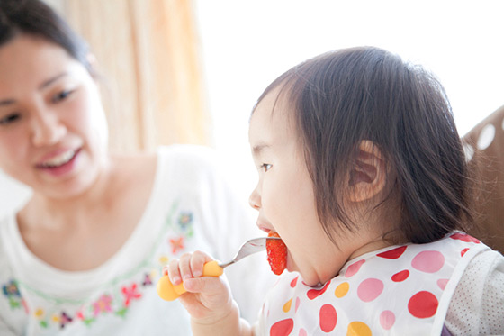
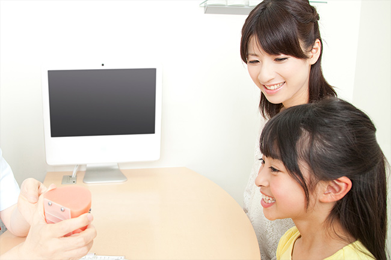
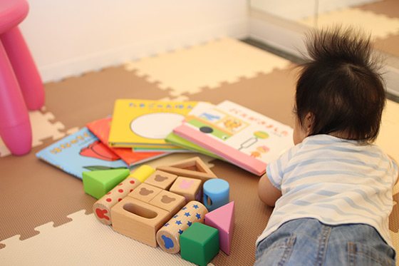

子どものお口の健康をサポート
～小児歯科・妊婦さん
子どもの歯（乳歯）は大人の歯（永久歯）に比べて虫歯になりやすいといった特徴があります。親御さんの中には「どうせ抜けるから大丈夫」といって虫歯を放置してしまう方もいらっしゃいますが、乳歯には永久歯が正しく生えそろうためのガイド的な役割があり、乳歯に問題があると将来的に歯並びが悪くなることがあるので注意が必要です。また乳歯が虫歯になると、永久歯も虫歯になりやすくなります。

子どもは自分自身ではお口の健康を守れません。そのため、親御さんがしっかりとサポートしてあげてください。三島駅・下土狩駅近くの歯医者「MI総合歯科クリニック」が一緒にお手伝いいたしますので、お子さんに歯が生えはじめましたら一度お連れください。
PICKUPMIフェスティバル
定期的に母親教室や患者教室を無料で開催し、地域のみなさんに正しい歯科知識をお伝えしております。
- 
- 
子どもを虫歯にさせないポイント
POINT1：歯が生えはじめたら歯医者へ

POINT1：歯が生えはじめたら歯医者へ
生後7～8ヵ月ころ、赤ちゃんに歯が生えはじめます。そして、歯が生えるということは虫歯になる可能性が出てきたということです。小さいころから歯医者に慣れるように、この時期になりましたら一度当院までお連れください。
POINT2：食後のブラッシングと口ゆすぎを習慣に

POINT2：食後のブラッシングと口ゆすぎを習慣に
食事やおやつのあとには、ブラッシングをする習慣をつけてあげましょう。外出先などでブラッシングが難しい場合は、口ゆすぎだけでも十分効果があります。小さいころから習慣化しておけば、将来的な口腔内環境の維持にも有効です。
POINT3：おやつの時間を決めておく

POINT3：おやつの時間を決めておく
おやつを長時間かけて食べる”だらだら食べ”は、お口の中を酸性にし続けてしまうため虫歯のリスクが高まります。「おやつは○時～○時まで！」としっかり決めることが大切です。おやつのあとは、ブラッシングや口ゆすぎもお忘れなく。
おやつ選びも工夫しましょう

小さなお子さんにとって、おやつも栄養源のひとつです。しかし、スナック菓子や甘いチョコレートばかり与えていると虫歯のリスクが高まりますし、肥満の原因にもなります。おやつには野菜や果物、乳製品といった虫歯になりにくい食品を選んであげてください。
また、シュガーレスやキシリトールが入ったガムなどもおすすめです。とくにキシリトールには虫歯の原因となるミュータンス菌の活動を抑えるはたらきがあるため、虫歯予防にも効果的です。甘い物を食べたあとなどにキシリトールガムを咬むと、唾液が分泌されてお口の中が再石灰化を促すといった効果も期待できます。
PICKUP生まれたての赤ちゃんに忍び寄る「家庭内感染」

生まれたばかりの赤ちゃんのお口の中には虫歯菌は存在していません。ではどこから菌がやってくるのでしょうか？ 実はまわりの大人のお口からやってくるのです。とくに一緒にいる時間の長いお母さんから感染することが多く、「母子伝播」とも呼ばれています。
こうした家庭内感染を防ぐために大切なのは、赤ちゃんとの接し方です。スプーンやお箸、カップやお皿などは専用のものを使い、キスなどにも注意してください。また、大人の食べかけを与えるのもよくありません。
そしてもっとも大切なのは、周囲の大人が常に清潔な口腔内環境を保つことです。赤ちゃんを虫歯から守るのに有効なのは、自身やご家族の予防意識なのです。
子どもの歯を守る処置メニュー
当院で行っている小児歯科用の処置メニューをご紹介します。また、お子さんが歯医者嫌いにならないよう、親御さんにご注意いただきたいポイントについてもまとめました。
ブラッシング指導
歯科衛生士がお子さんに合わせたブラッシングの方法を指導いたします。
シーラント
虫歯になりやすい奥歯の溝を歯科用プラスチックで埋め、虫歯を予防します。
フッ素塗布
歯質を強化する効果のあるフッ素を塗ります。とくに乳歯や生えたての永久歯に効果的な予防処置です。
お母さん、お父さんに気をつけてもらいたい7つのポイント
POINT1：歯医者にネガティブなイメージを持たせない
POINT1：歯医者にネガティブなイメージを持たせない
お子さんを叱るときなどに、「悪いことをしたら歯医者に連れて行くよ！」といった言葉を使われる方がいらっしゃいますが、これではお子さんに「歯医者は怖いところ」という悪いイメージを植えつけてしまいます。歯医者に行くことが罰となるような表現は控えましょう。
POINT2：歯医者に行くときに「何もしないよ」といったウソはつかない
POINT2：歯医者に行くときに「何もしないよ」といったウソはつかない
「歯医者さんにお口の中を診てもらうだけだよ」といわれたのに、実際には治療を受けさせられたら、お子さんは親御さんに対して「ウソをつかれた」と感じてしまいます。そんな不信感から歯医者嫌いになってしまうことがあるのです。お連れいただくまえに「予防や治療の大切さ」や「歯医者ですること」を正直に伝え、納得してもらってからご来院ください。
POINT3：歯医者に行く予定は数日前から伝えておく
POINT3：歯医者に行く予定は数日前から伝えておく
「今日は歯医者に行くよ！」と突然いわれても、お子さんには心の準備ができていませんし、そんな状態で診療を受けても身構えてしまいます。そうならないように、歯医者へ行く予定はあらかじめ伝えておき、カレンダーなどに書き込み、心の準備をする時間をつくってあげましょう。
POINT4：親御さんが不安なそぶりを見せない

POINT4：親御さんが不安なそぶりを見せない
治療を受けているとき、親御さんが不安そうにしていれば、お子さんに緊張が伝わってしまいます。お子さんが治療を受けているときには、親御さんがリラックスして手本になることが大切です。
POINT5：元気なときに歯医者に連れて行く
POINT5：元気なときに歯医者に連れて行く
お子さんが眠いとき、またお腹が減っている時間帯の通院は避けましょう。不機嫌な状態で診療を受けると、泣いたり暴れたりしてしまう可能性が高まります。普段の生活から機嫌がよく、元気な時間帯を選んで歯医者までお連れください。
POINT6：「痛くない？」と質問しない
POINT6：「痛くない？」と質問しない
つい不安になって「大丈夫？ 痛くない？」と聞いてしまいがちですが、「痛い」という言葉はいわないでください。「痛い」という単語を耳にすると、多くのお子さんは必要以上に痛みを感じてしまいがちです。親御さんは頑張っているお子さんを温かい目で見守ってあげてください。
POINT7：治療後はしっかりほめてあげる
POINT7：治療後はしっかりほめてあげる
治療が終わったあとは、「よく頑張ったね！ えらい！」と目一杯お子さんをほめてあげてください。そうすることでお子さんの自信につながり、また歯医者に行こうという気になってもらえます。
PICKUP当院はキッズスペースをご用意しています

当院では小さなお子さんが楽しく通院できるよう、キッズスペースをご用意しております。絵本やおもちゃなどがありますので、待ち時間に退屈することもありません。
妊娠中の歯科診療
妊娠中のお母さんの身体はとてもデリケートです。ホルモンの分泌などによって多くの変化があらわれ、虫歯・歯周病のリスクが高まることもあります。そのため、妊娠5～7ヵ月くらいの安定期のタイミングで、歯科医院での定期検診を推奨します。当院は産婦人科との連携により、安心できる処置・治療を実現しますので、元気な赤ちゃんを産むためにも、当院の妊婦さんのための歯科診療をご活用ください。
妊婦さんのお口の中に起こる変化
味の好みが変わる
妊娠中は食べ物の好き嫌いが激しくなるなどの変化が見られます。このときに、甘い物を食べ過ぎると虫歯のリスクが高まるので注意しましょう。
食生活の乱れ
つわりがひどい場合、食事のタイミングなどが乱れることがあります。食べられるときにだけ食べるといった食生活は、口腔内を不衛生にしがちです。
唾液の質が変化する
妊娠をすると唾液の分泌量が減る傾向にあります。これにより口腔内が酸性になりやすく、細菌が繁殖しやすい環境を生み出してしまいます。
小児歯科と妊婦さんの歯科診療のよくある質問
小児歯科Q&A
- Question子どもを歯医者に連れていくタイミングを教えてください。
- ANSWER
歯が生えてきた瞬間から虫歯のリスクが生じます。そのため、ご自宅でのブラッシングはもちろんのこと、虫歯になっていなくても歯医者への通院をはじめましょう。
- Question子どもの歯並びが悪くなる原因を教えてください。
- ANSWER
ポイントは大きく分けて3つです。ひとつは早めに歯医者に慣れてもらうことで、次に食後のブラッシング、もしくは口ゆすぎの習慣化です。そして、おやつの時間をしっかり決め、だらだら食べをさせないよう注意することです。
- Question子どもの歯並びが悪くなる原因を教えてください。
- ANSWER
歯並びが悪くなる原因は、遺伝による先天的なものから成長過程での後天的なものまでさまざまです。後天的なもので問題になりやすいのが「指しゃぶり」「咬みクセ」「おしゃぶりの長期使用」などです。少しでも歯並びが気になるようでしたら、3才からはじめる小児矯正をご検討ください。
- Question乳歯が虫歯になりやすいって本当ですか？
- ANSWER
はい。乳歯は永久歯に比べて酸への抵抗力が低く、エナメル質が薄くやわらかいという特徴があります。そのため、いったん虫歯になってしまうと進行がとても早く、5～6ヵ月程度で重症化することもあるのです。定期的にご来院いただき、小まめにチェックをすることが大切です。
- Question子どもが虫歯になる原因は何ですか？
- ANSWER
生まれたての赤ちゃんのお口には虫歯菌はいません。しかし、やがてご家族などのまわりの大人から感染し虫歯になってしまうのです。そのため、お子さんのお口を健康に保つには、まずは親御さんが虫歯を治し、積極的に予防することが大切です。お子さんを虫歯菌に感染させない取り組みもおすすめします。
妊婦さんの歯科診療Q&A
- Question妊娠中でも歯の治療はできますか？
- ANSWER
できれば妊娠5～7ヵ月の安定期に治療を受けるようにしましょう。ただし、緊急の場合には、そのほかの期間であっても処置を行うことがあります。判断に迷ったら、まずは当院までご質問ください。
- Questionレントゲン撮影は妊娠中でも大丈夫ですか？
- ANSWER
歯科用のレントゲンは、お腹から離れた場所で利用するため、影響はほとんどないといえます。しかし、できればレントゲン撮影は避けるべきなので、こうした検査をしなくてもよいように妊娠する前から予防処置で健康な口腔内環境を維持しておきましょう。
- Question歯科医院で処方された薬は飲んでも大丈夫ですか？
- ANSWER
当院では産婦人科と提携しているため、妊婦さんが飲んでも問題がないと認められたお薬を処方しております。ただし、基本的には妊娠中は薬の服用は控えるべきなので、できるかぎり少量をお渡ししています。
- Question妊娠中は歯周病になりやすいと聞きました。予防するにはどうすればいいですか？
- ANSWER
まずは妊娠前から口腔内ケアに努め、定期検診などの予防処置に通っておくことが大切です。妊娠後は「つわり」などの影響でブラッシングが不十分になりがちですが、できるかぎり怠らないようにしましょう。どうしても難しい場合は、食後に水や緑茶でうがいをするだけでも十分な効果があります。
- Question麻酔したときに赤ちゃんへの影響はありませんか？
- ANSWER
歯科治療における麻酔は局所麻酔で、全身麻酔とは異なるものです。そのため、お腹の中の赤ちゃんへの影響は心配いりません。基本的に麻酔を使うような治療を妊娠中に行わないようにしますが、激しい痛みがある場合にのみ麻酔を使用する場合もあります。